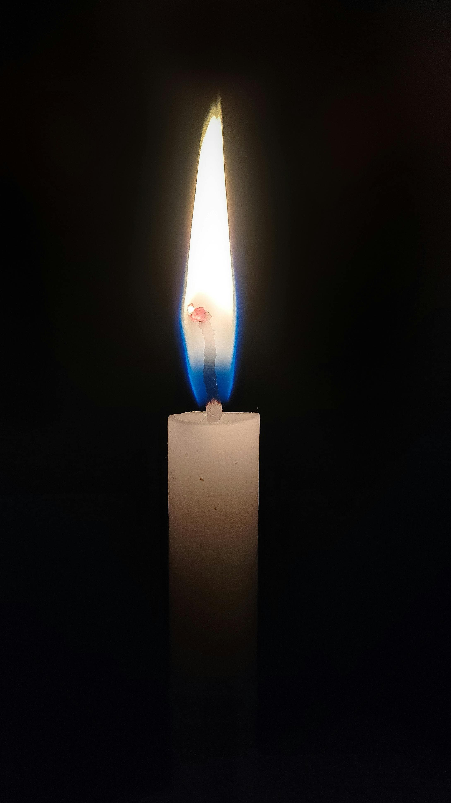

I'm here. What do you need from me, I'm not going anywhere, talk to me.
Talk to River
I'm here. What do you need from me, I'm not going anywhere, talk to me.
Talk to RiverIf you're at risk of harming yourself, or in immediate crisis, please reach out to a human who can be there with you in a way I cannot.
If your country isn't listed and you're in crisis, your local emergency number is the right place to start.